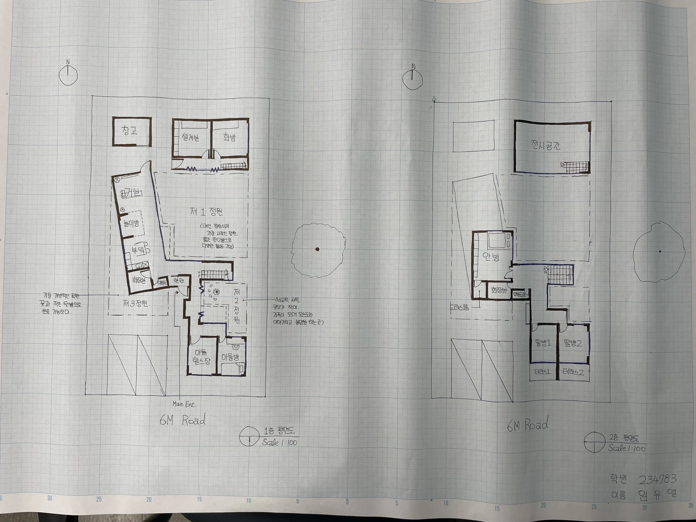

A HOUSE WITH THREE GARDENS
세 개의 정원으로 이어지는 집
건축가와 화가 부부, 대학생 아들, 어린 쌍둥이 딸을 위한 집입니다. 주거와 창작 공간을 세 개의 정원으로 연결하고, 가족의 공동생활과 사생활, 자녀의 성장에 따른 변화를 함께 계획했습니다.
- YEAR / SEMESTER
- 3학년 1학기 · 2025
- COURSE
- 주거형태와문화
- CONTRIBUTION
- 개인 설계
- SITE / SUBJECT
- 18 × 30 m · 540 m²의 과제 대지

THE IDEA
생각의 출발점
설계의 출발점은 “내부 공간과 외부 정원이 긴밀히 연계된 단독주택”이라는 과제였습니다. 남쪽의 6 m 도로와 동쪽 공원·보호수를 접한 540 m² 대지에서, 건축가와 화가의 작업 영역을 주거와 구분하면서 마당을 함께 쓰도록 구성했습니다. 가족이 모이는 생활 공간, 각자의 취미와 휴식, 자녀가 성장하며 필요해질 방을 세 정원 주변에 엮었습니다.
- 01
대지의 조건을 배치의 기준으로
18 × 30 m의 남북으로 긴 대지는 남쪽 도로에서 진입하고, 서쪽과 북쪽은 인접 대지, 동쪽은 보호수가 있는 공원에 면합니다. 평면에는 남측 진입부와 두 대의 주차 공간을 두고, 동측 공원과 보호수의 위치를 함께 표시해 외부 환경과의 관계를 드러냈습니다.
- 02
집과 작업실을 구분하고, 정원으로 연결
북측의 설계실·화방과 그 위 전시공간을 주거 영역과 구분했습니다. 작업실 앞 제1정원은 생활과 창작 영역이 함께 마주하는 외부 공간입니다. 공통 진입 이후에도 작업 영역과 주거 내부로 향하는 동선을 나누어 가족의 사생활을 고려했습니다.
- 03
성격이 다른 세 개의 정원
제1정원은 다양한 활동을 담는 넓은 잔디의 주된 사적 정원입니다. 제2정원은 가족이 모여 쉬거나 불멍을 즐기는 작은 정원, 제3정원은 진입부 가까이 꽃과 텃밭을 두는 가장 개방적인 정원으로 계획했습니다. 하나의 마당을 반복하기보다 활동과 개방성에 차이를 두었습니다.
- 04
돌봄과 각자의 취미를 함께 담기
거실과 부엌 사이에 놀이방을 두어 어린 쌍둥이의 활동이 가족의 일상과 가까이 있도록 했습니다. 대학생 아들의 방 곁에는 운동 공간을, 부부에게는 설계실과 화방을 배치했습니다. 가족 모두의 개별 공간과 공용 공간, 직업·취미를 위한 장소를 요구한 조건에 대응한 구성입니다.
- 05
현재의 가족에서 미래의 가족으로
과제는 4세 쌍둥이가 현재 부부와 침실을 공유하고, 초등학교 입학 이후에는 각자의 방을 갖도록 요구했습니다. 이를 전제로 2층의 딸방 1·2를 성장 후 사용할 방으로 계획하고 각각 테라스를 연결했습니다. 현재의 생활뿐 아니라 시간이 지나며 달라질 가족의 공간 수요를 반영했습니다.
- 06
두 층의 평면으로 생활 관계를 표현
1층에는 주된 공동생활과 아들의 개인 공간, 작업실과 정원을 두고, 2층에는 안방·딸방·전시공간을 배치했습니다. 1:100 프리핸드 평면에 실명, 가구와 계단을 표시해 주거·작업·외부 공간이 어떻게 나뉘고 연결되는지 표현했습니다.
READING THE RESULTS
설계의 출발점이 된 조건
| 구분 | 과제에서 주어진 조건 |
|---|---|
| 가족 구성 | 40대 건축가·화가 부부, 대학생 아들, 4세 여자 쌍둥이 · 총 5명 |
| 대지와 주변 | 18 × 30 m = 540 m² · 남측 6 m 도로 · 동측 공원과 보호수 · 서·북측 인접 대지 |
| 생활과 창작 | 작업실·전시실은 주거와 별동으로 구성하되 연결하고, 마당 등 외부 공간은 공유 |
| 프라이버시와 돌봄 | 공통 진입 이후 사생활을 보호하는 동선·개구부 계획, 거실·주방에서 살필 수 있는 놀이 공간 |
| 가족의 성장 | 미취학 쌍둥이는 부부와 침실 공유 · 취학 후 사용할 딸방 2개를 미리 계획 |
| 정원 | 최소 세 가지 서로 다른 성격의 정원을 내부 공간과 연계 |
| 규모와 표현 | 2개 층 · 차량 2대 · 인접 대지에서 최소 2 m 이격 · 1개 층 층고 3 m · 축척 1:100 |
위 표는 과제의 설계 조건이며, 각 조건에 대한 공간 구성은 평면도와 본문의 설계 설명에서 함께 살펴볼 수 있습니다.
PROCESS & OUTCOME
과정과 결과
사진을 누르면 크게 볼 수 있습니다.